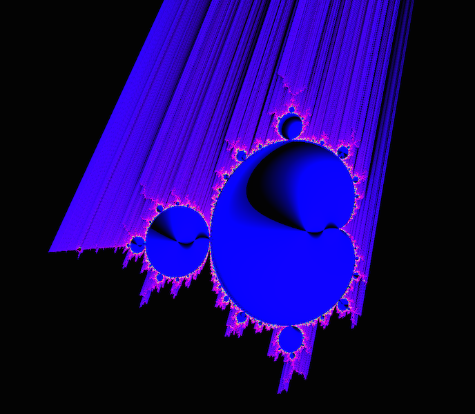
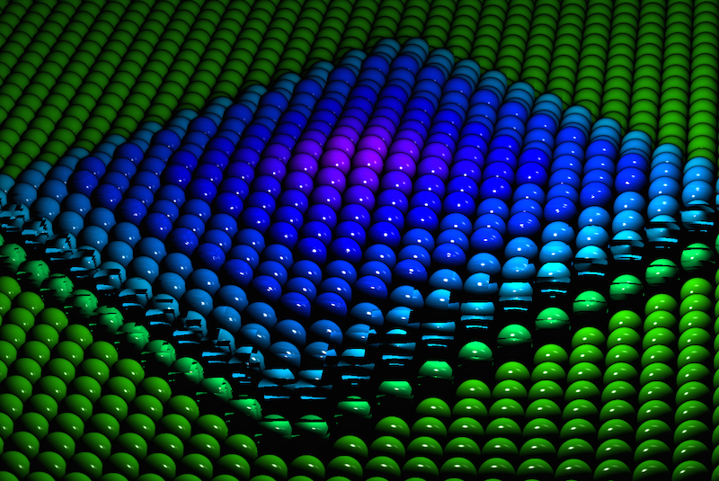
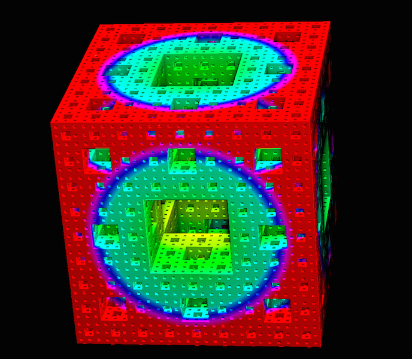
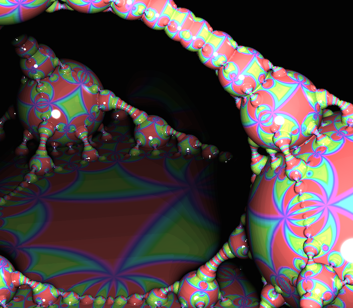

COS426 Final ProjectFractals — Writeup
Switch to: Interactive Editor
Introduction
Goal
Inspired by the Mandelbulb 3D shown in precept, our goal was to create a fractal-based sound visualizer. We envisioned an interactive, explorable 3D environment in which our extra dimension, music, controlled parameters of the animation. This visualizer could be used for educational purposes to help students conceptualize fractals in higher dimensions or for entertainment in the music industry. Our project to a wide range of audiences since it is both visually appealing and mathematically based. In general, fractals can be used to generate realistic terrains for movies and video games.Previous Work
The Mandelbulber system uses raymarching to render fractals in real-time. This technique relies on distance estimation, a method developed in the Fractal Forums community. The raymarching algorithm iteratively steps forward in the ray direction according to the distance estimation function. Inigo Quilez's site includes tutorials on distance estimation and raymarching, in addition to sample code and images. Kevin Horowitz describes some of the effects (fog, glow, environmental lighting by ambient occlusion) easily implemented within a pre-existing a raymarching framework. Mikael Christensen presents another helpful tutorial on the same topic.Christensen also covers an alternative approach to raymarching known as path tracing in the context of the open source, GLSL-based Fragmentarium system. Though both path tracing and raymarching shoot rays from the camera into the scene, path tracing calculates global illumination by integrating over the all the illuminance arriving at a single point on the surface and then reducing by the bidirectional reflectance distribution function (BRDF). Finally, Josh Marinacci presents an introduction to WebAudio and gives sample code for creating a basic visualizer by getting a frequency analysis of the sound playing at each frame of the animation. [[When do previous approaches fail/succeed?]]
Approach
Our project relies on GLSL shaders running in the browser and should be accessed using Google Chrome on a Mac (preferably on a processor with at least 8GB of RAM). We built our visualizer starting with the framework from previous assignments - specifically, the raytracer in Assignment 3 and the GUI from Assignment 2. Based on our initial survey of the previous work and the fact that we already had a working version of raytracing, we chose to implement raymarching rather than path tracing. We used Fast Fourier Transforms (FFT) to sample the audio data using WebAudio, and animated the colors, size, and other fractal parameters based on the resulting data. We expected this approach to work well for smaller screen sizes, since we must march a new ray for each pixel. Similarly, computers with more RAM tend to outperform other processors; they are better equipped to handle the necessary computations. If you have a slower computer we suggest making the browser window small (200x200 is a safe bet). Finally, we anticipated that the visualizer would run more smoothly with lower recursion levels since this cuts down the runtime of the distance estimation function.Methodology
Implementation Decisions
Raymarching vs. Path Tracing
The primary reason for choosing raymarching over path tracing was that we had access to the infrastructure for a functional raytracer. Using this code as a starting point, we were able to convert the raytracer to a raymarcher with relative ease.Calculating Surface Normals
To find the surface normals needed for the specular color calculation, there were two possible approaches. One method involves analytically calculating the normals for each object. For example, for a sphere we can simply subtract the sphere center from the position of the intersection and normalize the resulting vector. However, for more complicated structures (i.e. a Menger sponge) calculating normals analytically would present more of a challenge since we must track which face of the surface we have intersected as we recurse further down. The alternative is to use the finite difference method to approximate surface normals. Unfortunately, this method requires an additional six calls to the distance estimation function. This explains why the more complex scenes (like Mandelbrot, Julia 2D, Julia 3D) run more slowly than the field of infinite spheres.Bounding Volumes
One optimization our raymarcher performs is to first intersect the ray with a bounding sphere. If the ray fails to hit the sphere containing the fractal, we can immediately return the default color rather than marching the ray. However, we were then faced with the trade-off of using bounding volumes close enough to the fractal surface to optimize the raymarcher, but far enough to avoid cutting off areas of the fractal we wish users to view.Ambient Occlusion vs. Environment Lighting
Ambient occlusion approximates the effects of environment lighting by scaling the diffuse color based on the number of steps taken in marching the ray before intersecting the surface. We chose this alternative because it is much cheaper computationally.Julia & Mandelbrot - 2D vs. 3D
Currently, we have implemented the 2D Julia sets and the Mandelbrot set as 2D surfaces embedded in 3D, as opposed to extending our raymarcher to have the capacity to render 2D scenes. The decision here was made based on project scope and time constraints. The main factor was that we only began to build out these 2D fractals in an attempt to better understand the higher dimensional counterparts. Considering that our goal was an interactive 3D environment, we chose to focus on extending the truly 3D aspects of the project rather than improving the 2D versions.Julia & Mandelbrot - Coloring by Iterations
Though in our existing implementation the hue of the diffuse color depends on the number of iterations, we are not currently tracking the range of iterations in each frame as a whole. Therefore we found visually appealing ranges to scale the number of iterations by simply through trial and error. We might instead construct a histogram of iterations for each pixel to have finer control over the coloring.Julia & Mandelbrot - Terminal Condition
In the distance estimation functions for Julia and Mandelbrot, we break out of the recursion if the complex modulus of second complex number becomes too large. Tweaking the definition of 'too large' is essentially a trade-off between the visuals and the speed of the animations, since lowering the cutoff shortens the distance calculation. The following image shows a single frame of the animated Mandelbrot set with a cutoff of 1e20.
Though this version does include the external rings, the animation runs far slower. If we adjust the cutoff to be 1e8, the animation runs noticably more smoothly, however the external rings have vanished.

Zoom - Standard vs. Diminishing
We chose to implement zooming in the z-direction so that the zoom steps are proportional to the amount the user has already zoomed in. The alternative - translating by a constant amount along the z-axis - is jarring for the user, because it jumps the view through the objects in the scene (typically centered at the origin) rather than approaching them gradually.
Challenges
Passing Audio Data to GLSL - Arrays vs. Textures
Although GLSL does have the capacity to take in uniform arrays, there are a couple of critical limitations. Specifically, arrays in GLSL can only be accessed by constant indices. This poses problems when trying to draw different audio samples based on a given parameter (i.e. changing the index of the audio array according to the distance from the origin, as in the Menger sponge animation). Furthermore, GLSL limits the size of arrays which can be passed in through this method. A quick google search led us to John Smith's tutorial for an effective, albeit 'hacky' alternative of storing typed arrays in the RGBA values for a sampler2D texture. Though setting and retrieving the values is undeniably more complex, we can circumnavigate the disadvantages of GLSL arrays.Multidimensional Audio Data
Another challenge we experienced in the course of this assignment was mapping our multidimensional audio data to fractal or animation parameters with either one or two dimensions. We found that simply fixing an index of the audio data to utilize was a flawed solution since the animation would appear still during sections of the music where that aspect of the audio data was static. This translated into an animation which was visually interpreted to have 'lag'. To avoid this, we often used another dimension of the fractal to map to an index of the audio data. For instance, for Mandelbrot we used the number of iterations, while for the Menger sponge we adjusted each pixel's audio index relative to the distance from the origin.Infinite Spheres - Breaking
This bug manifested in the animated version of the field of infinite spheres. Due to the nature of replicating the spheres (by taking the modulus of the position in the x,z-directions), if the height changes were too drastic the spheres would break as shown in the image below.
We fixed this by adjusting the height changes to be less drastic, however a more permanent solution would be to try shifting the spheres in the y-direction at an earlier point in the code to ensure they do not overwrite one another.
Menger Sponge - Slicing
Our initial implementation of the menger sponge exhibited a 'slicing' behavior, as shown in the following image.Ultimately, we discovered that slicing occured as we approach the interior of the sponge, and found that decreasing the camera's field of view (FOV) eliminated this issue.
Results
We measured success qualitatively based on the resolution of our rendering, the speed of the animation, and the extent to which the visualizer seemed representative of the music. We tested our final project on computers with 8, 16, and 32GB of RAM and observed the expected trend that increasing RAM allowed for higher resolution, faster animations. Overall, our results indicate that we would need to further optimize our distance estimation functions in order to better accomodate users with lower processing power.
Infinite Spheres
Menger Sponge
Mandelbrot
Julia 2D
Julia 3D
Interactive Julia 3D
Color (by ratio of iterations) and values for the imaginary part of the second complex number (single audio index) dependent on audio.
Apollonian Gasket
Color and height (by manhattan distance to center sphere) dependent on audio.

Color (by distance to origin) dependent on audio.
Color (by ratio of iterations) dependent on audio.
Color (by ratio of iterations) and values for the second complex number (single audio indices for real and imaginary coordinates) dependent on audio.
No audio.

Scaling and color dependent on audio (single audio index)
Discussion
In general, our approach was successful in that we were able to create a fractal-based sound visualizer where audio inputs alter the nature of the generated images. However, there are obvious limitations to this approach. Of the implementation decisions discussed above, in a few cases we chose alternatives based on the time constraints of the project rather than the success of the output. For instance, given additional time, we would prefer to implement a 2D analog of the ray marcher to render the Mandelbrot set and the 2D Julia sets as 2D images rather than 2D surfaces embedded in three dimensions. Furthermore, the coloring for the Julia and Mandelbrot sets is currently based purely on the number of iterations. However, scaling presents challenges since we do not know the range of iterations ahead of time. A common coloring scheme creates a histogram of iterations in order to adjust the coloring more accurately.
Another area for potential follow-up work would be optimizing the code. As previously mentioned, since the distance estimation functions are called repeatedly, improving these would be a worthwhile use of time. Additionally, we could further investigate analytic methods of calculating the normals to reduce the number of calculations per pixel. Apart from the changes to the technical aspect of the raymarcher, we might improve our UI and adjust the visualizer to give the user more color and music options. For instance, we could include a search bar powered by SoundCloud, as in this recent submission to the 2015 LA Hacks competition.
In the course of completing this project, we learned about raymarching, distance estimation, and constructing fractals. We found that fractals in higher dimensions (i.e. the Julia set) were more challenging to conceptualize, and therefore also more difficult to produce visually appealing animations for. During this assignment, we found the resources in the New Media Center (in 130 Lewis Science Library) invaluable, since testing our project was drastically simpler on machines with large amounts of processing power. The New Media Center is well-suited to the needs of future graphics students frustrated by the performance of the assignments on their personal laptops.
Conclusion
To sum up, raymarching and distance estimation allow us to render infinitely complex structures with only a few lines of code. Fractals tend to produce satisfying visual results despite their simple implementation, making them an attractive option for graphics enthusiasts looking to tinker. Different rendering techniques or styles, as well as extensions of known fractals into higher dimensions, are all ongoing topics of discussion in popular fractal forums online. In short, this project could be extended in a number of directions, and the 'wow' factor of the end results was limited only by the amount of time which we had to work on it.